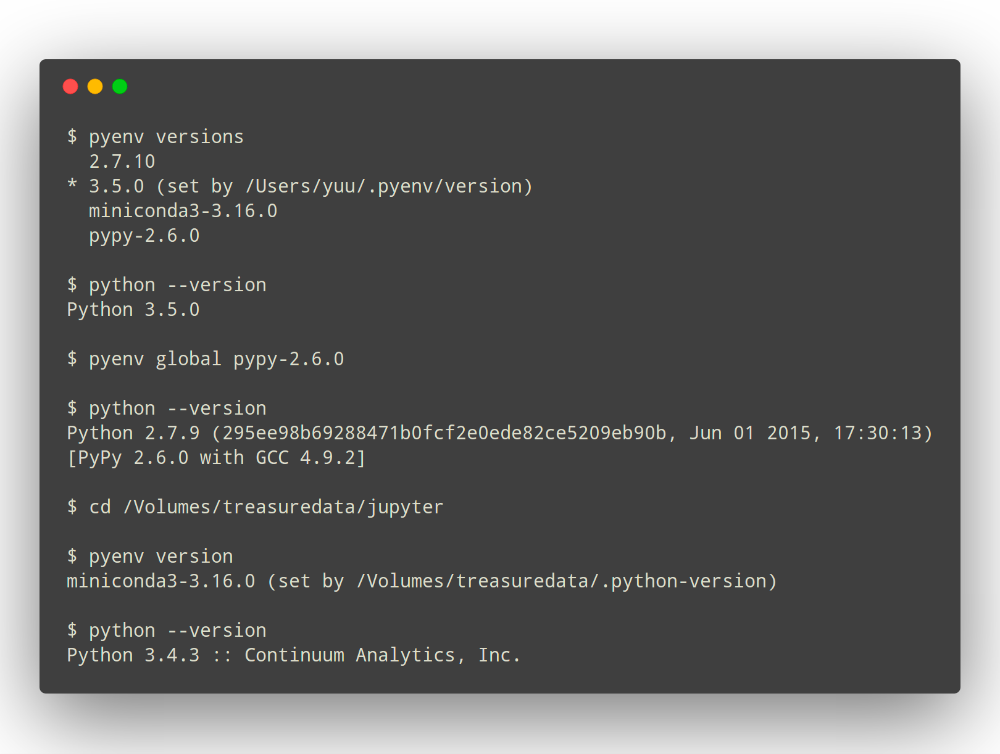
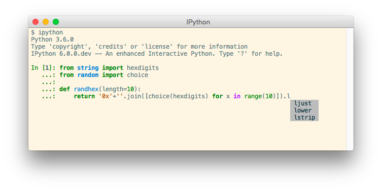

Python#
Install and manage python versions using pyenv.
pyenv#
This process uses pyenv to manage Python installation and versions. pyenv is a Python version manager that can manage and install different versions of Python.
brew install pyenv
Run the following lines to update your dot files, informing them to use pyenv to manage Python
echo 'export PYENV_ROOT="$HOME/.pyenv"' >> ~/.zshrc
echo 'command -v pyenv >/dev/null || export PATH="$PYENV_ROOT/bin:$PATH"' >> ~/.zshrc
echo 'eval "$(pyenv init -)"' >> ~/.zshrc
echo 'export PYENV_ROOT="$HOME/.pyenv"' >> ~/.zprofile
echo 'command -v pyenv >/dev/null || export PATH="$PYENV_ROOT/bin:$PATH"' >> ~/.zprofile
echo 'eval "$(pyenv init -)"' >> ~/.zprofile
exec "$SHELL"
Install additional dependencies required to build Python
brew install openssl readline sqlite3 xz zlib tcl-tk
pyenv install 3.10.5
pyenv install 3.9.5
pyenv install 3.8.13
pyenv install 3.7.13
pyenv global 3.9.5 3.10.5 3.8.13 3.7.13
pyenv rehash

IPython#
Install IPython
pip install 'ipython[zmq,qtconsole,notebook,test]'

pipx#
Install pipx
pipx is a tool to help you install and run end-user applications written in Python. It’s roughly similar to macOS’s brew, JavaScript’s npx, and Linux’s apt.
It’s closely related to pip. In fact, it uses pip, but is focused on installing and managing Python packages that can be run from the command line directly as applications.
brew install pipx
pipx ensurepath